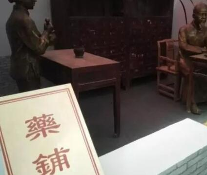

今天，村长不讲项目，说点对做偏门项目有用的话，那就是做偏门项目，要多看，多问，多执行，很有用的，别不当回事，因为，村长看到很多做偏门项目的人，都是脑袋一热就干，并没有理性的去考虑，适合不适合自己，这样做偏门项目，往往都是以失败告终。
前一段时间，村长的老娘牙疼的挺厉害，于是让村长去下面买点止疼药，村长楼下有三个药铺，村长先去的是一家新开的药铺，进去以后问服务员有没有止疼药，服务员说有，于是给我拿了一款，村长一看20多块钱，心想20就20吧，于是想用医保卡买，结果对方说现在医保卡系统还不完善，需要你把卡压在这里才行，所以，村长说算了，于是去了第二家药铺，进去以后，对服务员说买牙疼药，问了我一些问题：老人还是小孩，目前吃的什么药，于是村长就说了一遍，于是服务员给我推荐镇店之宝，大概近100元，村长一看是中药，这个肯定见效慢，不可能立马止疼，要知道牙疼不是病，真疼起来要人命，一点也不假，于是村长说就想买止疼药，于是服务商给我推荐了一款，40多块钱，也是中药，并告诉村长，不能老吃西药，不然太伤胃了，而且，不能一块吃。

于是，村长谢绝了服务员的好意，打算去第三家药铺，村长先是在外面用手机百度了一下，看看到底这个止痛药能不能和其他消炎药一块吃，结果一看是可以一块吃的。
只是说伤胃，不能长期吃，大概吃5天就停掉。
于是村长走进第三家药铺，直接说那药物的名字，结果服务员给我找了出来，7块钱一盒，于是村长买了2盒，只花了14块钱。
回家以后，老娘就吃下这药，村长也给老娘说了一些提醒的话，比如：不能依赖，吃5天以后停掉，要饭后吃等。
就这样一晚上，老娘没有再喊牙疼。
通过村长这件事，大家应该明白一个道理吧，不明白？听村长给您详细的说一下：
前2家，推荐的药物都很贵，虽然指出了问题，但是，没有找到用户的需求，也没有解决用户需求，牙疼厉害的时候，你吃中药真的不顶用，所以，必须吃西药才行，你还推荐给我吃中药（很贵的药），而且还告诉我不能一起吃，证明，这个服务员不专业，只是为了赚钱。
第三家，没有多问，你要什么要我就给推荐什么药，而且是最便宜的药，因为，一个名字的药会有各种厂家，所以有便宜的，也有贵的。而第三家直接推荐给你便宜的药，证明不是为了赚钱，她没有问你，证明确实也有点不负责任，但是，毕竟是她们也只是服务人员，并非医生，但是，你要知道久病成医是有道理的，更何况村长是学医出身，根本不需要她指导我，村长吃药从来不问她们，问了也白问，她们大部分是为了赚钱，还不如百度一下，再结合自己的学医经验，也知道怎么配药，而且，村长有这么多学医的同学，有什么症状直接问她们不就行了。
任何病，西药就是消炎，止疼，中药就是补血养气，清热解毒，你只需知道你是什么病，自己就可以开处方了，当然，你如果不懂还是听医生的吧，村长是学医出身，所以，你不能和村长比。
最后的结果：买了最便宜的药，而且还止住了疼，也学到了东西。
通过这件事，我们反过头来说做偏门项目，在做偏门项目初期，你会遇到各种事情，有小人，有君子，你需要学会判断，分析，选择适合自己的偏门项目，这样才能成功。
村长期初做偏门屋的时候，也是四处碰壁，先说遇到的小人，很多小人会给你使坏，比如竞争对手，他们想尽各种办法打压你，比如，直接复制粘贴你的原创文章，把你的作者名字改成他们自己的，这样导致你的网站不收录，刚开始村长确实很难受，现在已经不在乎了，因为，你不可能去找每个同行，让他们别复制你的文章，有道德情操的人会给你删掉，但是，也有很多人不搭理你，你说咋办？你为了这个找他打一架，估计你连他住哪都找不到，就算你知道他住哪里，更何况你去了，路费、饭费、住宿费你自己还得出，成本太高了。与其这样还不如好好做自己的站，多赚点钱呢。
不过还好，付出总会有回报的，因为，看着偏门屋站点一天比一天的好，村长觉得自己的付出没有白付出，也庆幸自己能坚持。
做偏门项目，要多看，多问，多执行！
你以为你复制了我的文章，我的站点就会受影响？新站确实受影响，但是，现在已经影响不大了，毕竟村长的站点也大半年了，更何况现在百度对原创站点是有保护的，因为，村长每次发文章以后，第一时间都会先给百度提交，这样百度会先抓取我的站点，虽然不能立马放出来，但是，百度会认为我的文章就是原创，其他复制你的文章的站点，就算短期可以收录，最终也会降权的，因为，你的站点本身就是盗取我的原创，百度怎么可能不知道呢，久而久之，你的站点百度会认为是采集站或者垃圾站，最终导致降权。
而且，就算你复制了我的文章，也只是文字，我的思想你是复制不了的，而且，我下一篇文章写什么你知道吗？你早晚会被我带到沟里，因为，每个站点，都会有自己的风格，文章可以复制，但是，风格很难模仿。
因为一个站点如果没有了自己的特色，就是一个失败的站点，早晚会被百度丢弃。
这篇文章主要讲一个道理，用村长的真实故事编写的，就是告诉大家做偏门项目要多看，多问，多执行，只要这样，才能达到你想要的结果，还不会走，就想跑，即使你跑的快，也不稳，肯定会栽跟头。
热门推荐
11--- |
13--- |
8--- |
3--- |
15--- |
9--- |
1--- |
17--- |
5--- |
10--- |